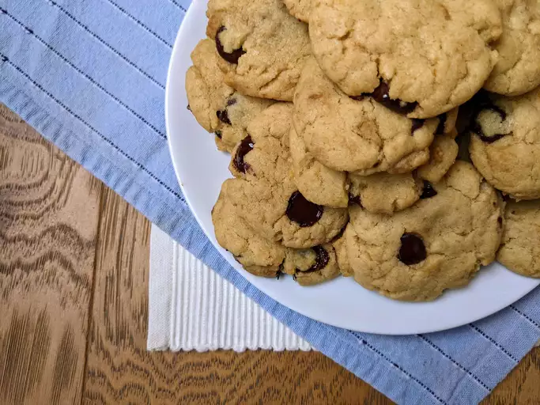

Return to Index
Curry Rice

Description
Tasty vegan chocolate chip cookies made without supporting animal cruelty!
Ingredients
- ½ cup coconut oil
- 1 cup brown sugar
- ¼ cup almond milk
- 1 tablespoon vanilla extract
- 2 cups all-purpose flour
- 1 teaspoon baking soda
- 1 teaspoon baking powder
- ½ teaspoon salt
- 1 cup vegan chocolate chips
Steps
- Preheat the oven to 350 degrees F (175 degrees c)
- Cream coconut oil and brown sugar together in a bowl with an electric mixer until thoroughly mixed, about 5 minutes. Mix in almond milk and vanilla until incorporated, 1 to 2 minutes.r
- Whisk flour, baking powder, baking soda, and salt together in a bowl. Add the flour mixture to the almond milk mixture, stirring until combined; dough will be crumbly. Fold in chocolate chips.
- Roll the dough into tablespoon-sized balls and place on ungreased or parchment-lined baking sheets. Flatten each ball out a bit with your palm, pressing any crumbs back together.
- Bake in the preheated oven until the edges are golden brown and set, about 8 minutes.